00:02要实现线性回归，关键的第一步就是定义代价函数。
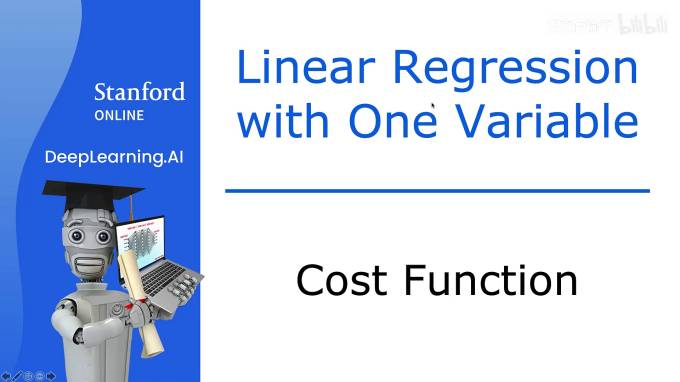
00:08这就是我们本期视频要构建的内容。
00:12代价函数能告诉我们模型的表现如何，这样我们就能尝试让它做得更好。
00:19我们来看看这具体意味着什么。
00:23回顾一下，你有一个训练集，包含了输入特征 x 和输出目标 y。
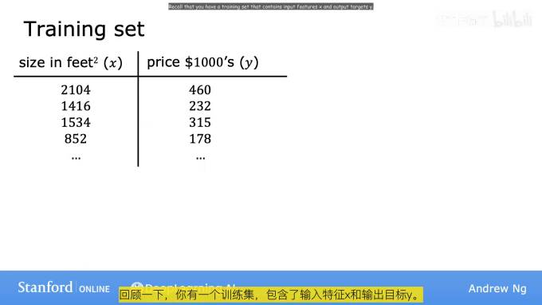
00:30而你要用来拟合这个训练集的模型，就是这个线性函数 f 下 w，下 b，括号 x 等于 w 乘以 x 加 b。
00:42再引入一点术语，这里的 w 和 b 被称为模型的参数。
00:49在机器学习中，模型的参数是你在训练过程中可以调整的变量，目的是改进模型。
00:58有时你也会听到参数 w 和 b 被称为系数或权重。
01:07现在，我们来看看这些参数 w 和 b 到底起什么作用。
01:12根据你为 w 和 b 选择的值，你会得到不同的函数括号 x，从而在图上生成不同的直线。
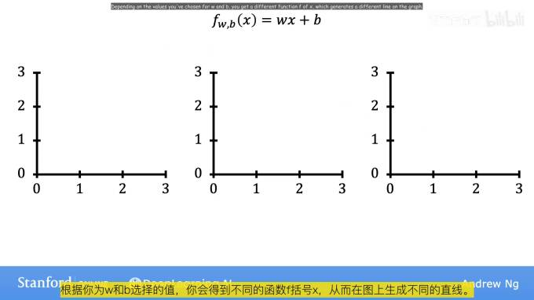
01:22记住，我们可以把 f 写作 fw，b，括号 x 的简写。
01:29我们来看几张 f 括号 x 在图表上的图示。
01:35也许你已经很熟悉在图上来画线了，但即使这对你来说是复习，我也希望这能帮你建立直觉，理解参数 w 和 b 是如何决定 f 的。
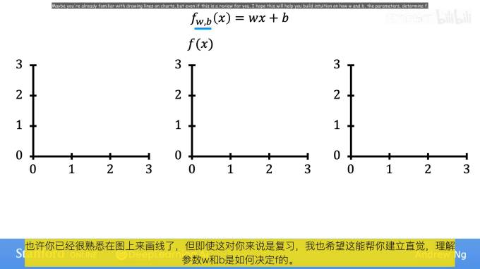
01:48当 w 等于零，b 等于一点五时，f 看起来就是这样一条水平线。
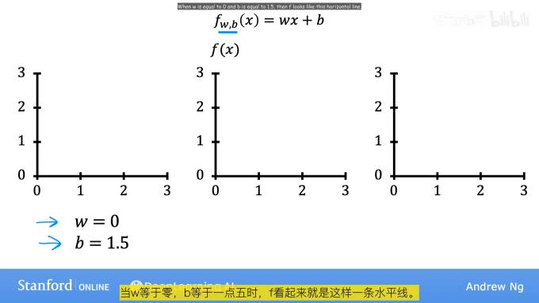
01:56这时，函数 f 括号 x 等于零乘以 x 加一点五。
02:06它总是预测一点五作为 y 的估计值。
02:15而在这里，b 也被称为 y 截距，因为它在这张图上与纵轴或 y 轴相交于此。
02:24第二个例子，如果 w 是零点五，b 等于零，那么 f 括号 x 等于零点五乘以 x。
02:34当是零时，预测值也是零。
02:39当 x 是二时，预测值就是零点五乘以二，等于一。
02:45这样你就得到了一条像这样的线。
02:49注意，斜率是零点五除以一。
02:55所以 w 的值给出了这条线的斜率，即零点五。
03:02最后，如果 w 等于零点五，b 等于一，那么 f 括号 x 等于零点五乘以 x 加一。
03:13当 x 是零时，f 括号 x 等于 b，也就是一。
03:19所以这条线与纵轴相交于 b 这个 y 截距。
03:24同样，当 x 是二时，f 括号 x 等于二。
03:30所以这条线着起来像这样。
03:32同样，斜率是零点五除以一。
03:36所以 W 的值给出了斜率，也就是零点五。
03:41回想一下，你有一个像这里展示的训练集。
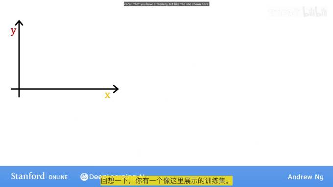
03:46对于线性回归，你要做的就是为参数 w 和 b 选择合适的值，使得从函数 f 得到的这条直线能够很好地拟合数据，就像可能这里展示的这条线。
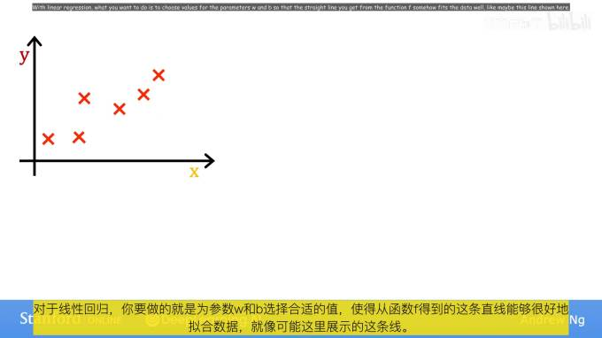
04:00当我说这条线拟合数据时，从视觉上，你可以认为，与其他那些不那么靠近这些点的可能直线相比，由 f 定义的这条线大致穿过了，或者说相当接近训练样本。
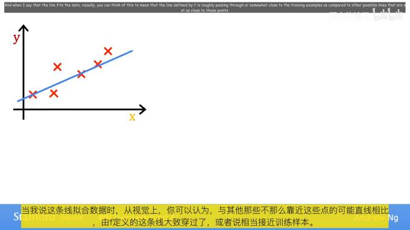
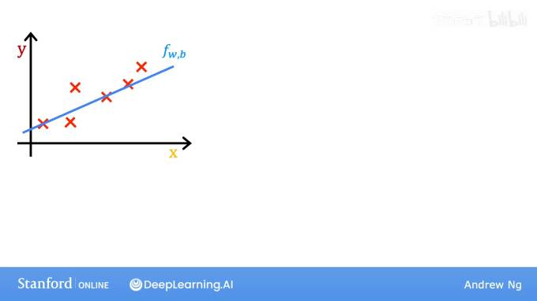
04:18提醒一下符号记法，像这里这样的一个训练样本，由 x 上标 i，y 上标 i 定义，其中 y 是目标。
04:33对于给定的输入 x 上标，函数 f 也会为 y 做出一个预测值，它所预测的这个 y 值在此显示为 yhat 上标 i。
04:48对于我们选择的模型，f 括号 x 上标 i 等于 w 乘以 x 上标 i 加 b。
04:56换句话说，预测值 y hat 上标 i 等于 fw，b，括号 x 上标 i，对于我们正在使用的模型，f 括号 x 上标 i 等于标。
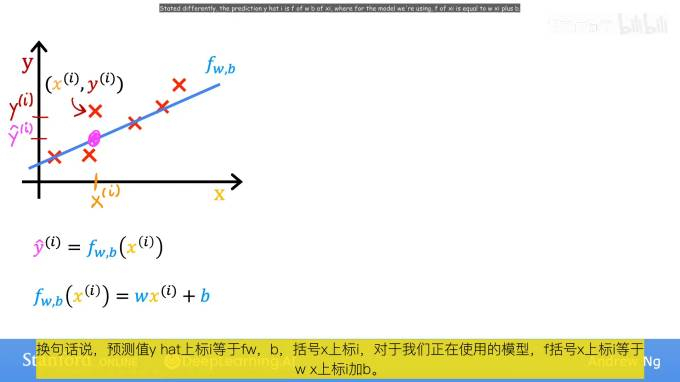
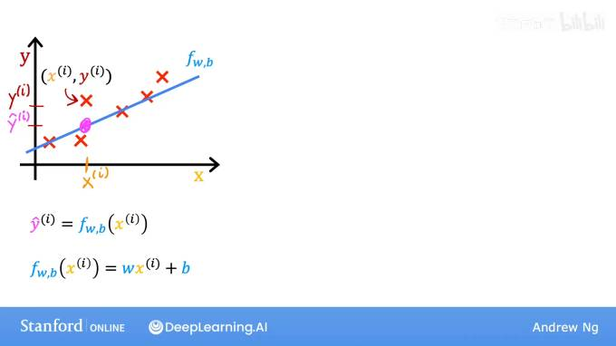
05:15那么现在的问题是，你如何找到 w 和 b 的值，使得对于许多或所有训练样本 x 上标 i，y 上标 i，预测值上标 i 都接近真实目标 y 上标 i？
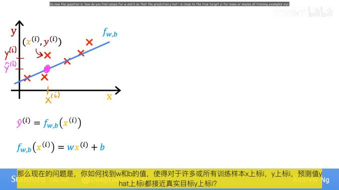
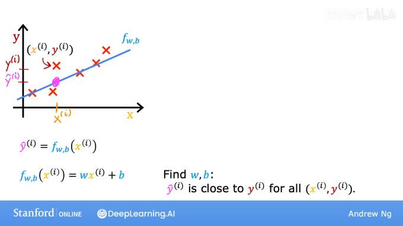
05:32为了回答这个问题，我们先来看看如何衡量一条线拟合训练数据的好坏。
05:40为此，我们将构建我们的代价函数。
05:44代价函数接收预测值 y hat，并通过计算 y hat 减去 y 来将其与目标 y 进行比较。
05:58我们是在衡量预测值偏离目标值多远。
06:02接下来，我们计算这个误差的平方。
06:08此外，我们要对训练集中不同的训练样本 i 来计算这个项。
06:14所以，当衡量第 i 个样本的误差时，我们会计算这个平方误差项。
06:21最后，我们想衡量整个训练集的误差。
06:25具体来说，让我们把平方误差像这样求和。
06:30我们将从 i 等于一，二，三，一直求和到 m。
06:36记住，m 是训练样本的数量，对于这个数据集是四十七。
06:42注意，如果我们有更多的训练样本，m 变大了，由于要对更多样本求和，你的代价函数会计算出一个更大的数值 Andrew。
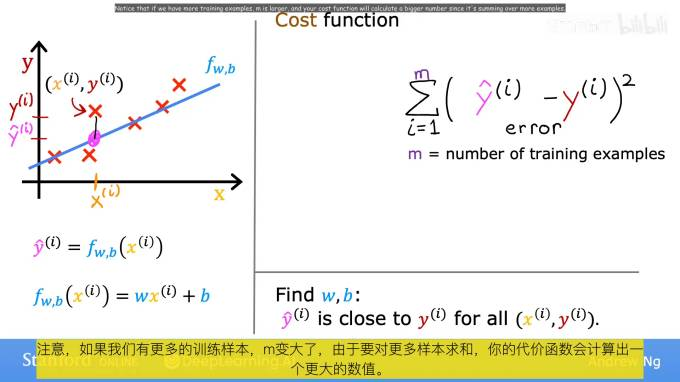
06:52所以，为了构建一个不会因为训练集规模变大而自动变大的代价函数，按照惯例，我们会计算平均平方误差，而不是总的平方误差。
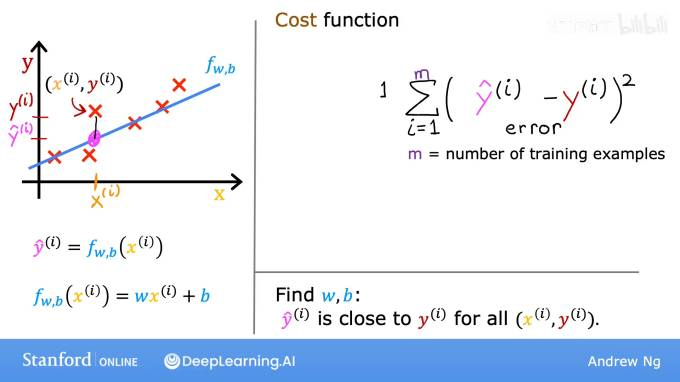
07:06我们通过除以 m 来实现，像这样。
07:16按照惯例，机器学习领域的人们实际使用的代价函数，额外除以了二乘以 m。
07:24这额外的除以二，仅仅是为了让我们后续的一些计算看起来更简洁一些，但无论你加不加上这个除以二，代价函数都能正常工作。
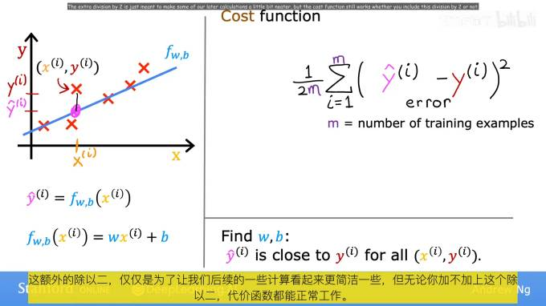
07:36所以，这里的这个表达式就是代价函数，我们将把它写作 J，括号 w，b，来指代这个代价函数。
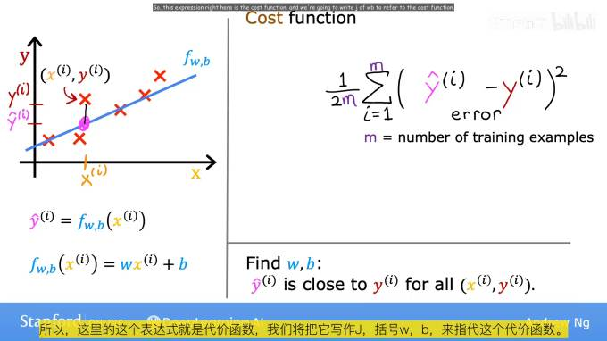
07:46它也被称为平方误差代价函数，之所以叫这个名字，是因为你在计算这些误差项的平方。在机器学习中，不同的人会在不同的应用中使用不同的代价函数。
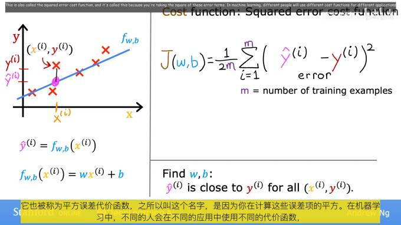
08:03但平方误差代价函数是迄今为止线性回归中最常用的一种。
08:03但平方误差代价函数是迄今为止线性回归中最常用的一种，而且就此而言，对于所有回归问题也是一样，它在许多应用中似乎都能给出很好的结果。
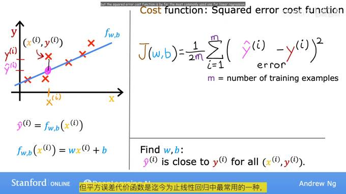
08:18提醒一下，预测值 y hat 等于模型 f 在 x 处的输出。
08:28因此，我们可以将代价函数 J 括号 w，b 改写为：二 m 分之一，乘以从 i 等于一到 m 的，f 括号 x 上标 i 减去上标 i 的平方，求和。
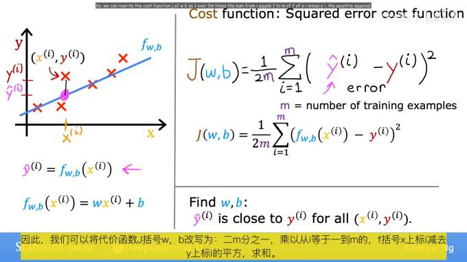
08:45最终，我们是要找到让代价函数变小的 w 和 b 的值。
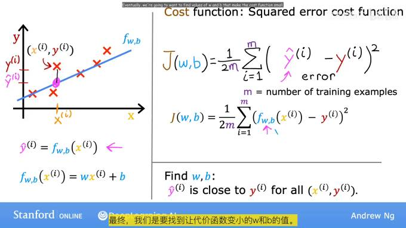
08:52但在进行到那一步之前，让我们先更直观地理解一下 J 括号 w，b 到底在计算什么。
09:00此时此刻，你可能会想，我们为了定义代价函数做了好多数学运算，但它到底在做什么呢？
09:09让我们进入下期视频，我们将通过一个例子逐步了解代价函数实际在计算什么，希望能帮你建立直觉，理解 J 括号 w，b 很大与代价 J 很小分别意味着什么。